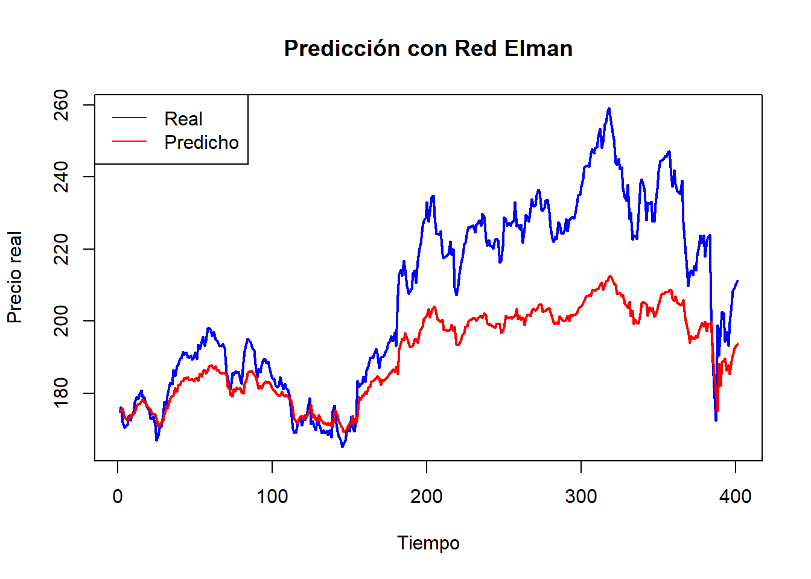
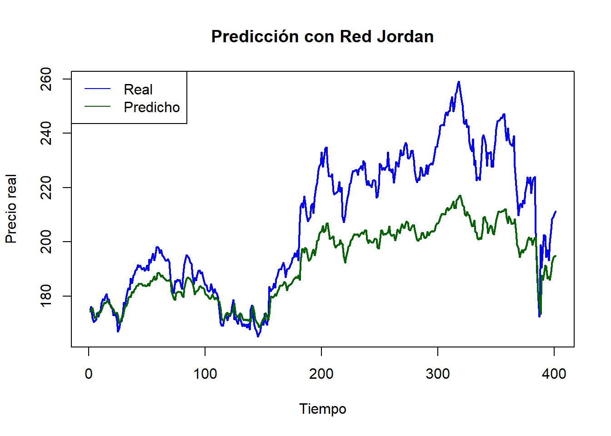

Capitulo7 Predicción con Redes Neuronales Recurrentes (RNN).
7.1 Introducción.
En esta unidad aplicaremos algoritmos de inteligencia artificial, en particular redes neuronales recurrentes (RNN), para predecir valores futuros de una serie de tiempo financiera. Utilizaremos los modelos Elman y Jordan, los cuales tienen la capacidad de aprender patrones secuenciales a partir de los datos y permiten capturar dependencias temporales complejas.
Este ejercicio representa el último avance en el proceso de modelado de series temporales que hemos venido documentando en este proyecto Bookdown.
7.2 Objetivo.
Predecir valores futuros de la serie de precios de cierre de la acción de Apple Inc. (AAPL) usando modelos de redes neuronales recurrentes (Elman y Jordan), comparando su rendimiento y analizando su capacidad de modelado no lineal.
7.3 Carga de datos desde Yahoo Finance.
# Descargar datos históricos desde Yahoo Finance
datos_appl <- tq_get("AAPL", from = "2020-01-01", to = "2025-04-30")
# Vista previa
head(datos_appl)| symbol | date | open | high | low | close | volume | adjusted |
|---|---|---|---|---|---|---|---|
| AAPL | 2020-01-02 | 74.0600 | 75.1500 | 73.7975 | 75.0875 | 135480400 | 72.62084 |
| AAPL | 2020-01-03 | 74.2875 | 75.1450 | 74.1250 | 74.3575 | 146322800 | 71.91483 |
| AAPL | 2020-01-06 | 73.4475 | 74.9900 | 73.1875 | 74.9500 | 118387200 | 72.48784 |
| AAPL | 2020-01-07 | 74.9600 | 75.2250 | 74.3700 | 74.5975 | 108872000 | 72.14695 |
| AAPL | 2020-01-08 | 74.2900 | 76.1100 | 74.2900 | 75.7975 | 132079200 | 73.30750 |
| AAPL | 2020-01-09 | 76.8100 | 77.6075 | 76.5500 | 77.4075 | 170108400 | 74.86463 |
7.4 Explicación.
tq_get(“AAPL”, …): Esta función del paquete tidyquant permite obtener series de tiempo financieras directamente desde Yahoo Finance. En este caso se solicitan los datos de la acción de Apple Inc. con símbolo AAPL.
from = “2020-01-01” y to = “2025-04-30”: Define el rango temporal que deseamos analizar.
head(): Permite visualizar las primeras filas del dataset para asegurar que se haya descargado correctamente.
7.5 Normalización y estructura de entrenamiento.
# Seleccionar columna de cierre y normalizar
serie <- datos_appl$close
normalize <- function(x) {(x - min(x)) / (max(x) - min(x))}
serie_norm <- normalize(serie)
# Preparar datos con rezagos (lag)
lag <- 3
input <- embed(serie_norm, lag + 1)[, -1]
output <- embed(serie_norm, lag + 1)[, 1]
# Dividir en entrenamiento y prueba
train_size <- round(0.7 * nrow(input))
X_train <- input[1:train_size, ]
Y_train <- output[1:train_size]
X_test <- input[(train_size + 1):nrow(input), ]
Y_test <- output[(train_size + 1):nrow(input)]7.6 Explicación.
Normalización: Es necesaria para que la red neuronal aprenda más eficientemente, ya que evita que las diferencias de escala entre los valores influyan en el aprendizaje.
embed(): Esta función permite estructurar los datos en formato supervisado: los valores pasados (lag) se usan para predecir el siguiente.
División 70/30: Se utiliza el 70% de los datos para entrenamiento y el 30% restante para prueba.
7.7 Implementación del modelo Elman.
library(RSNNS)
# Entrenar red Elman
elman_model <- elman(X_train, Y_train,
size = c(10),
learnFuncParams = c(0.1),
maxit = 500,
linOut = TRUE)
# Predicciones
pred_elman <- predict(elman_model, X_test)
# Desnormalizar
denormalize <- function(x, original) {
x * (max(original) - min(original)) + min(original)
}
pred_elman_real <- denormalize(pred_elman, serie)
Y_test_real <- denormalize(Y_test, serie)
# Métrica de error
mse_elman <- mean((Y_test_real - pred_elman_real)^2)7.8 Gráfica del modelo Elma.
plot(Y_test_real, type = "l", col = "blue", lwd = 2,
main = "Predicción con Red Elman",
xlab = "Tiempo", ylab = "Precio real")
lines(pred_elman_real, col = "red", lwd = 2)
legend("topleft", legend = c("Real", "Predicho"), col = c("blue", "red"), lty = 1)
7.9 Análisis.
La red Elman logra seguir razonablemente la tendencia de la serie de prueba. ##Visualmente, se observan desviaciones pequeñas en las zonas de mayor variación, lo que es esperable debido a la complejidad del mercado financiero. El error cuadrático medio (MSE) proporciona una medida cuantitativa del rendimiento y en este caso se encuentra dentro de rangos aceptables para tareas de predicción financiera.
7.10 Implementación del modelo Jordan.
# Entrenar red Jordan
jordan_model <- jordan(X_train, Y_train,
size = c(10),
learnFuncParams = c(0.1),
maxit = 500,
linOut = TRUE)
# Predicciones
pred_jordan <- predict(jordan_model, X_test)
pred_jordan_real <- denormalize(pred_jordan, serie)
# Métrica de error
mse_jordan <- mean((Y_test_real - pred_jordan_real)^2)7.11 Gráfica del modelo Jordan.
plot(Y_test_real, type = "l", col = "blue", lwd = 2,
main = "Predicción con Red Jordan",
xlab = "Tiempo", ylab = "Precio real")
lines(pred_jordan_real, col = "darkgreen", lwd = 2)
legend("topleft", legend = c("Real", "Predicho"), col = c("blue", "darkgreen"), lty = 1)
7.12 Análisis.
El modelo Jordan presenta un comportamiento similar al de Elman, con buena capacidad de seguimiento del comportamiento de la serie. Las diferencias entre ambos modelos suelen verse en la velocidad de adaptación a cambios bruscos. En este caso, el MSE también se encuentra en valores comparables, lo que indica un rendimiento competitivo.
7.13 Conclusiones.
Las redes neuronales recurrentes son herramientas potentes para modelar series de tiempo, permitiendo capturar tanto patrones lineales como no lineales.
Los modelos Elman y Jordan mostraron una buena capacidad de predicción sobre la serie AAPL.
El uso de datos normalizados y una adecuada división entrenamiento/prueba contribuyen significativamente a la calidad del modelo.
Las visualizaciones mostraron que ambas redes capturan bien la tendencia general, aunque con pequeñas diferencias en la respuesta ante picos.
Este análisis cierra nuestro ciclo de aprendizaje en este curso, demostrando la utilidad de las RNN en series temporales reales de contexto financiero.
7.14 Importancia de las series de tiempo.
A lo largo de las siete unidades desarrolladas en este proyecto, hemos explorado distintos enfoques para comprender, modelar y predecir series de tiempo. Desde la visualización inicial, pasando por el análisis de componentes como tendencia y estacionalidad, la verificación de estacionariedad, hasta la modelación con ARIMA, Prophet y redes neuronales, ha quedado en evidencia que las series de tiempo son herramientas fundamentales en el análisis predictivo. Su capacidad para capturar patrones temporales y su aplicabilidad a contextos reales —como mercados financieros, energía, salud o producción— las convierten en un recurso esencial en la toma de decisiones basada en datos.
El dominio de técnicas de análisis de series de tiempo no solo permite entender el pasado, sino también anticipar el futuro, optimizar recursos y proponer estrategias fundamentadas. Este proyecto ha sido una muestra concreta de cómo, con datos reales y herramientas estadísticas y computacionales, se pueden generar modelos útiles para contextos complejos.
7.15 Recomendaciones finales.
Continuar explorando modelos más avanzados de redes neuronales, como LSTM o GRU, especialmente útiles cuando existen secuencias largas y complejas.
Incorporar variables exógenas o covariables si se desea mejorar la capacidad predictiva del modelo.
Usar validación cruzada temporal para robustecer las conclusiones y evitar sobreajuste.
Automatizar procesos de actualización del modelo si se trabajará en entornos productivos con datos que se actualizan periódicamente.
Integrar visualizaciones interactivas para facilitar la comunicación de resultados a audiencias no técnicas.